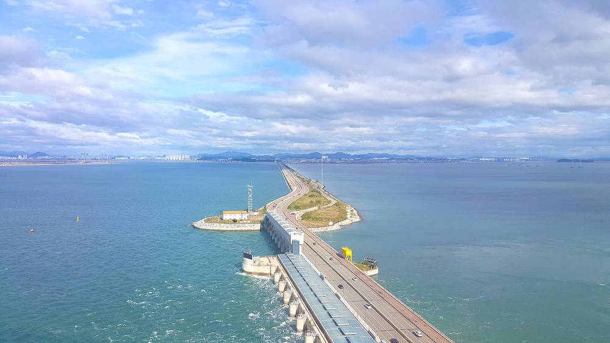

시흥시, 시화방조제 태양광 수익 일부를 청소년 쉼터에…소상공인 이익공유도 적용

시화MTV 12.6MW 기업형 사업에 소상공인 이익공유 방식…구체 배분은 알려지지 않아
경기 시흥시가 시화방조제 자전거길에 설치한 761.6㎾ 규모 태양광 설비의 발전수익 일부를 청소년 쉼터 태양광 설치에 쓰고 있다고 6일 밝혔다. 시화MTV 스틸랜드에서는 12.6MW 규모 기업형 태양광 사업이 추진되고 있으며, 이 사업에는 소상공인 이익공유 방식이 적용됐다. 공공 유휴부지에서는 태양광 발전소 4기(315㎾)가 운영 중이고, 주택·기업·공공건물에 태양광과 지열 설비를 보급하는 신재생에너지 융복합지원사업도 이어 가고 있다. 시흥시는 앞서 5일 열린 제8회 대한민국 솔라리그에서 한국에너지공단 이사장상(최우수상)을 받았다. 이번 발표에서는 이익공유의 구체적인 배분 방식과 금액은 함께 알려지지 않았다.
시민에너지 관점
방조제 자전거길 761.6㎾와 공공 유휴부지 4기 315㎾는 공공부지 태양광의 수익이 청소년 시설로 돌아가는 구조를 보여 준다. 대규모 기업형 사업이 외부 자본 중심이어서 수익이 지역 밖으로 샌다는 우려가 있지만, 시흥시는 소상공인 이익공유라는 장치를 이 사업에 넣었다. 다만 12.6MW 사업의 배분 방식과 금액이 공개되지 않으면 주민이 효과를 가늠하기 어렵다. 지자체가 배분 기준과 금액을 공개하고 주민·소상공인이 직접 참여하는 몫을 넓히는 방안을 논의해야 한다.
출처: 뉴시스 2026-11-06 박석희 원문 보기
始興市、始華防潮堤の太陽光収益の一部を青少年シェルターに…小規模事業者への利益共有も適用
始華MTVの12.6MW企業型事業に小規模事業者への利益共有方式…具体的な配分は不明
京畿道始興市は6日、始華防潮堤の自転車道に設置した761.6kWの太陽光設備の発電収益の一部を、青少年シェルターへの太陽光設置に充てていると明らかにした。始華MTVのスチールランドでは12.6MW規模の企業型太陽光事業が進められており、この事業には小規模事業者への利益共有方式が適用された。公共の遊休地では太陽光発電所4基（315kW）が稼働中で、住宅・企業・公共施設に太陽光と地中熱設備を普及させる新再生可能エネルギー融合支援事業も続けている。始興市は5日に開かれた第8回大韓民国ソーラーリーグで、韓国エネルギー公団理事長賞（最優秀賞）を受けた。今回の発表では、利益共有の具体的な配分方式と金額は明らかにされていない。
市民エネルギーの視点
防潮堤の自転車道761.6kWと公共遊休地4基315kWは、公共用地の太陽光の収益が青少年施設に戻る仕組みを示している。大規模な企業型事業は外部資本が中心で収益が地域外に流れるという懸念もあるが、始興市はこの事業に小規模事業者への利益共有という仕組みを盛り込んだ。ただし12.6MW事業の配分方式と金額が公開されなければ、住民は効果を測りにくい。自治体が配分基準と金額を公開し、住民や小規模事業者が直接参加する取り分を広げる方策を議論すべきだ。
出典: 뉴시스 2026-11-06 박석희 原文を読む
始兴市将始华防波堤光伏收益部分用于青少年庇护所…小商户利益共享方式同步适用
始华MTV 12.6MW企业型项目适用小商户利益共享方式…具体分配未披露
韩国京畿道始兴市6日表示，设在始华防波堤自行车道上的761.6kW光伏设施，其发电收益的一部分正用于在青少年庇护所安装光伏。在始华MTV钢铁园区，一个12.6MW规模的企业型光伏项目正在推进，该项目适用了小商户利益共享方式。公共闲置土地上有4座光伏电站（315kW）在运行，面向住宅、企业和公共建筑推广光伏与地热设备的新能源融合支援项目也在持续。始兴市在5日举行的第8届大韩民国太阳能联赛中获得韩国能源公团理事长奖（最优秀奖）。此次发布未同时披露利益共享的具体分配方式和金额。
市民能源视角
防波堤自行车道761.6kW和公共闲置土地4座315kW，显示出公共用地光伏的收益回到青少年设施的结构。有人担心大型企业型项目以外部资本为主，收益会流出本地，但始兴市在该项目中加入了小商户利益共享的机制。不过，如果12.6MW项目的分配方式和金额不公开，居民就难以判断成效。地方政府应讨论公开分配标准和金额，并扩大居民和小商户直接参与的份额。
来源: 뉴시스 2026-11-06 박석희 查看原文
Siheung puts part of Sihwa seawall solar income into youth shelters; small-business profit sharing applied
12.6MW corporate project at Sihwa MTV uses a small-business profit-sharing scheme; details of the split not disclosed
The city of Siheung in Gyeonggi Province said on the 6th that part of the income from a 761.6kW solar installation on the Sihwa seawall bicycle path is being used to put solar on youth shelters. A 12.6MW corporate solar project is under way at Sihwa MTV's Steelland, and a profit-sharing scheme for small businesses has been applied to it. Four solar plants totaling 315kW operate on idle public land, and the city continues a renewable-energy support program that supplies solar and geothermal equipment to homes, companies and public buildings. On the 5th, Siheung won the Korea Energy Agency chairman's award (top prize) at the 8th Korea Solar League. The announcement did not give the details of how the profit sharing is split or the amounts.
Citizen Energy View
The 761.6kW on the seawall bike path and the four 315kW plants on idle public land show solar income from public land returning to youth facilities. Some worry that large corporate projects rely on outside capital and let profits leak out of the region, but Siheung built a small-business profit-sharing scheme into this project. Without disclosure of the split and amounts for the 12.6MW project, though, residents cannot judge its effect. Local governments should discuss publishing the sharing criteria and amounts and widening the share in which residents and small businesses take part directly.
Source: 뉴시스 2026-11-06 박석희 Read the original